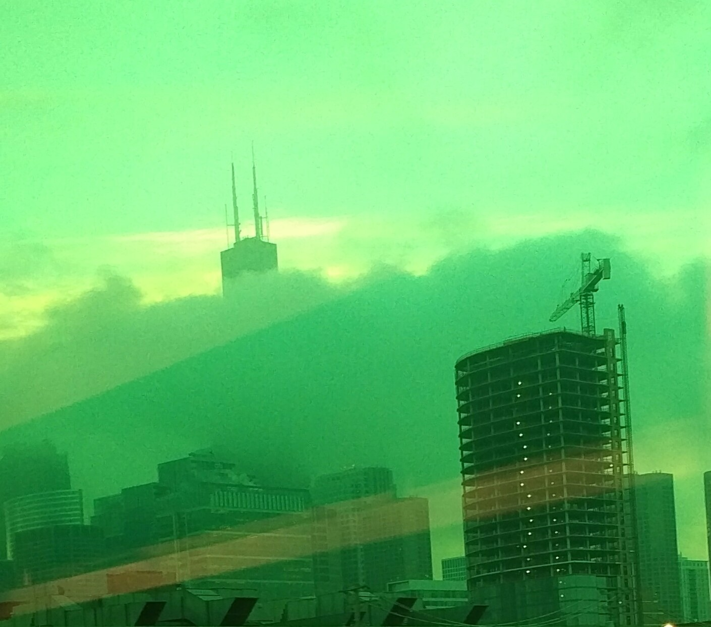

On Campus
December, 14, 2015
The first day of school always bring some excitement, a bit of anxiety and a lot of unknown. Dev Bootcamp started off no differently.
After eight weeks at home, I was eager to see these people in person, and had little idea of how many there would be on campus in Chicago. A number of faces that I had paired with remotely were missing, which adds an unnerving bit of mystery. But twenty others had made it this far, along with me.
The material in the first week focuses on what I call algorithms. Many of the tasks require stringing together phrases that we’ve learned into mini programs that can convert a string, test whether a word is a palindrome, or other simple tasks. In the end, many of these come off as little mind puzzles that require you to think about mapping the shortest route to the solution, and then implementing it with code. Some provide an opportunity to explore recursion or other higher-level techniques. Looking around the room after these challenges, it’s easy to draw the line between those with more coding experience than others.
Naturally, some of these exercises are repetitive from previous work we did in DBC or on other code-ucation sites. The goal is to begin working in pairs and groups, and do that all day. It’s a transition, but not a troubling one. Everyone I’ve worked with brings such high levels of energy, attention, patience and commitment. It’s inspiring.
One challenge that I didn’t expect to face in the first week was the teaching style at DBC. The last time I sat in a classroom was 15 years ago in a liberal arts college. This is an environment most of us know well. The teacher stands in front and offers some type of lecture on new material, encourages a bit of discussion with the students, and then assigns work at home which builds upon the lecture.
DBC begins with the work, and waits for students to ask their own questions, which may lead to a short lecture on portions of the material. At first, I was frustrated with the pattern. I felt like it was silly to have 10 pairs of students Googling the same things online for answers, when a single presentation or explanation at the beginning could have provided the same direction to all. I mean, we’re all looking for the same information, right?
I realized that’s not always true, once we started changing group partners and seeing others’ code. Each of us attacks these problems in different ways, at our own speed. The exploration process is important to our individual learning, and reflects DBC’s emphasis on the learning-to-learn model. Now, I don’t think every different solution is a good one, or a potentially good one. Nor do I think my solutions were all good ones. I know this isn’t creative writing. There may be a single best way to skin a cat. But sometimes you have to wander in the woods for a while before you can begin to ask questions about which way to go.
That said, once we identified issues that needed explaining, I feel DBC staff does a great job being responsive and providing lectures to the group on specific topics. It’s definitely an adjustment to sitting in this different kind of classroom.
On top of the learning, DBC places a big emphasis on emotional wellbeing and positive communication within the group. No doubt, this is a very stressful environment for many of us. We are required to participate in a series of activities that build team cohesion and encourage open feedback between individuals. This goes a long way to defuse much of the competitiveness and tension that naturally develops.
All in all, week one was something of a shock, but a positive intro to everything that will follow.